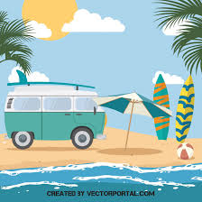

Minhas férias começaram no dia 13 de Dezembro no Senai . No Cotil, que fica no barrio:
Almeida, elas iniciaram no dia 29 de Novembro. Nesses próximos subtitulos, vou descrever mais sobre minha rotina
Umas das coisas mais interessantes nas férias é que você fica entediado de tanto tempo livre que você tem, que chega num ponto que você procura coisas para fazer
Gosto muito de jogar coisas mais simples, como brawl stars e pou. É bem rápido para abrir e bem divertido 😀
Tenho na minha Steam vários jogos, mas a maioria tenho um pouco de preguiça de jogar.
Estou apredendo <html>, é bem fácil e simples e depois vou começar com css. Acho que vai ser fácil também, já que é so design e o que deve ser dificil é javascipt. Depois, vou aprender uma framework, talvez o react, para o desenvolvimento da pesquisa cientifica. Olha um exemplo do meu código para fazer este site:
h1 ins em Minhas big FÉRIAS big, como estão sendo?em> ins h1
hr
p sup Minhas férias começaram no dia 13 de Dezembro no Senai. No Cotil, que fica no barrio sup address Almeida address, elas iniciaram no dia 29 de Novembro. Nesses próximos subtitulos, vou descrever mais sobre minha rotina p
Não me sinto muito inclusa no grupo, acho que porque sou um pouco ocupada e tenho um pouco de preguiça de compartilhar ideias
Então, resumindo, gosto de minhas férias, mas o que mais gosto de fazer é, em ordem:
Dê:
Pamela Nachbr
Aprender é enriquecedor, quando isso não é forçado e sim como hobbie, Pamela Nachbar
"Umas das coisas mais boas da vida é saber amar e ter autoconfiança"Pamela Nachbar
Se você gostou do meu blog, acesse mais páginas: Link externo
clique aqui para ver maisMinha segunda página: clique aqui
Link para o downlod das noticias: Baixar noticias